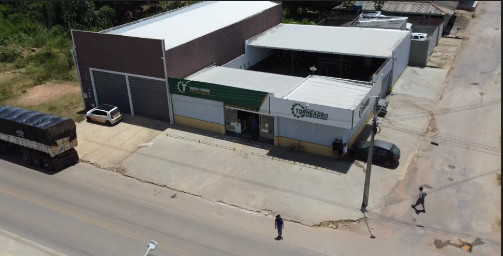
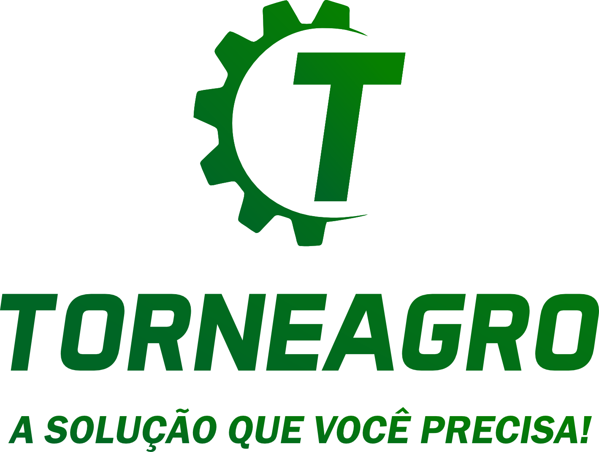
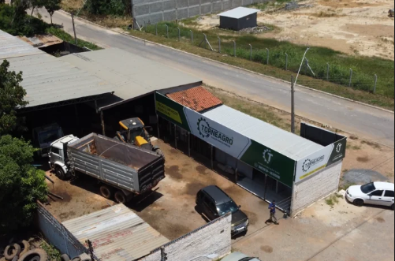
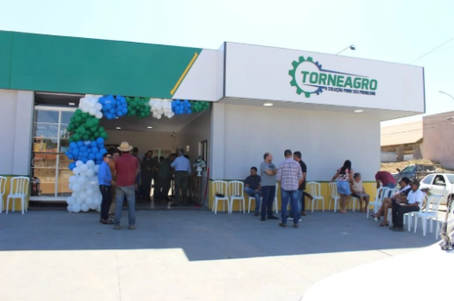

Recuperação e embuchamento de componentes desgastados.
- Barras e quadros
- Cilindros hidráulicos
- Pistões
- Eixos
[ Força no campo ]
[01] Oficina para o agronegócio _
Restauração, fabricação de peças, solda e torno em um só lugar — para o produtor resolver o problema sem rodar a cidade atrás de oficina.
Chamar no WhatsApp →
[02] Quem somos _

“ Atendemos fazendeiros, cooperativas e empresas do agronegócio. Nosso compromisso é entregar serviço bem feito, no prazo que o campo exige.
[03] Produto em destaque _
Conte para a gente a aplicação, o material transportado e as medidas. Montamos a rosca certa para o seu caso.
Pedir orçamento →[04] O que fazemos _
Recuperação e embuchamento de componentes desgastados.
Peças sob encomenda, inclusive projetos exclusivos.
Soldagem para metais que exigem técnica.
Usinagem e montagem de mangueiras.
[ + ] Nossa estrutura _


[05] Como funciona _
Mande fotos e medidas pelo WhatsApp.
Analisamos a peça e passamos o orçamento.
Restauração ou fabricação na oficina.
Peça pronta para voltar ao trabalho.
[06] No que acreditamos _
[07] Dúvidas _
Sim. Além das peças de linha, fabricamos peças exclusivas a partir da sua necessidade.
Trabalhamos com solda em alumínio e inox, nos processos MIG e TIG.
Chame no WhatsApp (61) 3633-2392 com fotos e, se possível, as medidas da peça.
Ela atende várias aplicações, do agronegócio à indústria alimentícia e à construção. Fale com a gente para dimensionar.
[08] Fale com a gente _